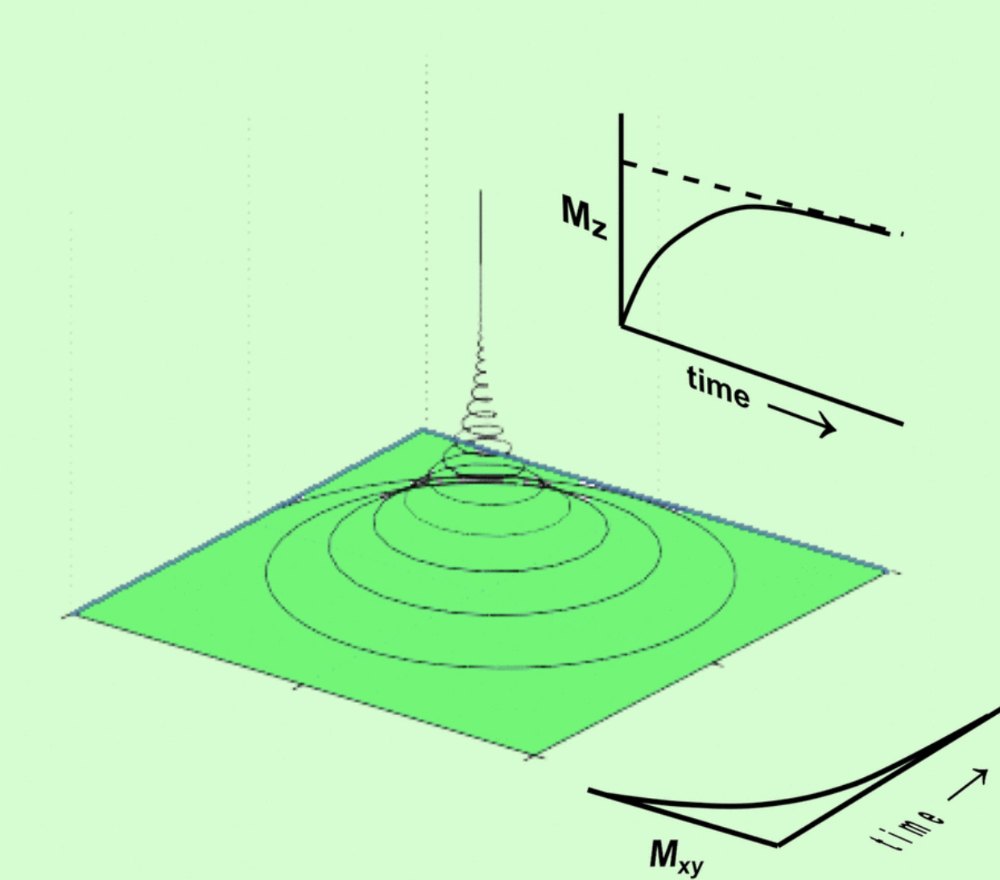
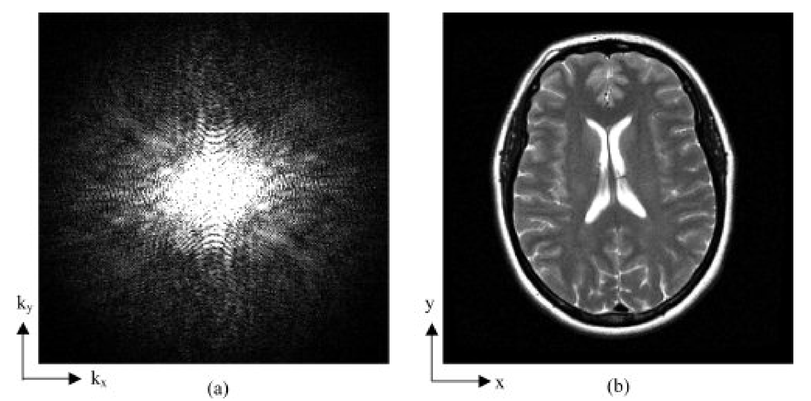
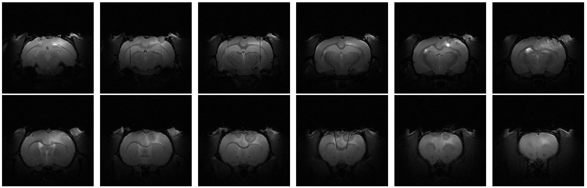
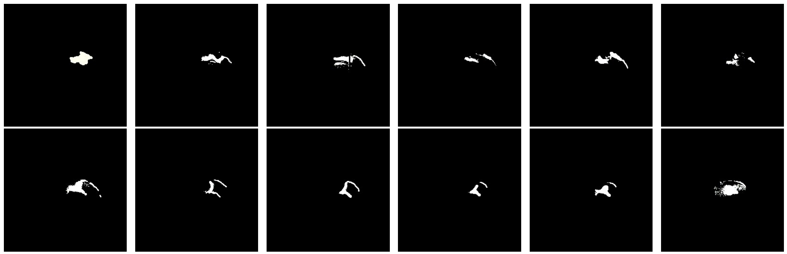
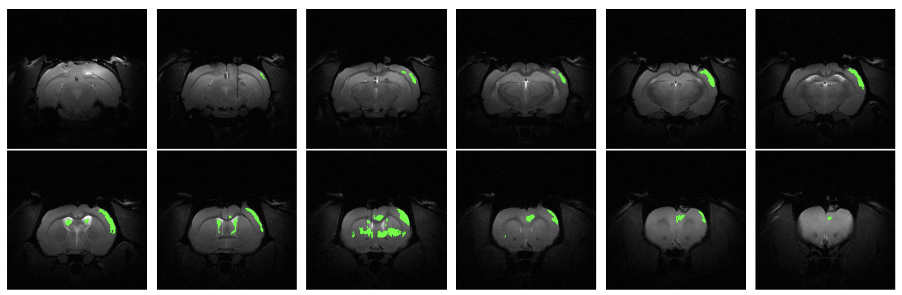

Understanding Magnetic Resonance Imaging (MRI)
Introduction
Magnetic Resonance Imaging (MRI) is a powerful and non-invasive imaging technique used to observe detailed internal structures. It is widely applied in both clinical and research settings to investigate the brain, muscles, heart, and other internal organs.
Principle of MRI
Magnetic Resonance Imaging (MRI) relies on the principles of nuclear magnetic resonance. When an external magnetic field is applied to a system containing hydrogen nuclei, the spins of these nuclei align predominantly in the direction of the magnetic field. This alignment creates a net magnetization (\(M\)), which can be described by the following equations:
$$ \begin{cases} M_x(t)=M_0 e^{-\frac{t}{T_2}} \sin(\omega t), \\ M_y(t)=M_0 e^{-\frac{t}{T_2}} \cos(\omega t), \\ M_z(t)=M_0 (1-e^{-\frac{t}{T_1}}) \end{cases} $$
where \( M_0 \) is the initial value of the net magnetization, which increases with a stronger external magnetic field. \( T_1 \) and \( T_2 \) are parameters that depend on the physico-chemical structure of the sample. These times represent the relaxation times for the transverse and longitudinal components of the magnetization, meaning that they decreases by a factor of \(1-e^{-1}\approx 63\% \) after \( T_2 \).

Figure 1: Illustration showing the tendency of net magnetization to return to the longitudinal axis, making the transverse magnetization null over time.
In practice, the transverse components (\( M_x \), \( M_y \)) do not return to 63% of the equilibrium value within \( T_2 \). Local chemical structure differences and magnetic field inhomogeneities cause this process to be faster. Hence, the observed decay time (\( T_2^* \)) is defined as:
$$ T_2^* = \frac{1}{\frac{1}{T_2} + \gamma \Delta B_0} $$
where \( \gamma \) is the gyromagnetic ratio and \( \Delta B_0 \) is the magnetic field variation at the measurement point. \( T_2^* \) is the practical decay time of the transverse component to \( \frac{1}{e} \), often more useful and reliable for studies, requiring more uniform magnetic fields due to greater sensitivity to field irregularities.
Relaxation times \( T_1 \) and \( T_2 \), and thus \( T_2^* \), depend on the amount and size of water molecules and hydrophilic molecules (those tending to chemically combine with water). This theoretical and practical relationship is vital for creating images of living specimens.
K-Space and Image Reconstruction
MRI captures electromagnetic wave information, encapsulating all system data in the K-space (\( \mathbb{K} \)). K-space is a data matrix where each point contains spatial frequency information obtained during the MRI scan. The coordinates of K-space are related to the gradient fields applied during scanning. The K-space data is collected over time as the gradients are varied.
$$ (k_x, k_y)(t) = \left( \int_{0}^{t} \gamma G_x(u) \, du, \int_{0}^{t} \gamma G_y(u) \, du \right) \in \mathbb{K} $$
where \( \gamma \) is the gyromagnetic ratio, and \( G_x \) and \( G_y \) are the magnetic gradients. The K-space contains wave information for MRI data, allowing image reconstruction through inverse Fourier series, using methods like the Fast Fourier Transform (FFT). For more detailed information about FFT, check my article on Fast Fourier Transforms.

Figure 2: K-space of an MRI of a human brain and associated image.
Image reconstruction from K-space involves applying the inverse Fast Fourier Transform (iFFT) to convert the frequency data back into the spatial domain, producing the final MRI image. The quality and accuracy of this reconstructed image depend on the completeness and resolution of the K-space data.
Obtaining Relaxation Times
The relaxation times \( T_1 \) and \( T_2 \) provide important information about tissue properties. The signal intensity \( S \) in MRI is directly proportional to the transverse magnetization components \( M_x \) and \( M_y \). Specifically, the signal intensity can be expressed as:
$$ S(t) = \|\vec{M}_{xy}\| = \sqrt{M_x(t)^2 + M_y(t)^2} $$
Here’s the procedure to calculate these relaxation times:
Calculating \( T_1 \) Relaxation Time
- Initial Excitation (Inversion Pulse): Apply a 180-degree inversion pulse to invert the net magnetization.
- Recovery Periods (Inversion Times, \( TI \)): Allow the magnetization to recover for various inversion times (\( TI \)).
- Secondary Excitation (Excitation Pulse): Apply a 90-degree excitation pulse after each \( TI \) to flip the recovered magnetization into the transverse plane.
- Signal Measurement: Capture the signal (image) after the 90-degree pulse at each \( TI \).
- Repeat for Multiple Inversion Times:
- Apply 180-degree inversion pulse.
- Wait for \( TI_1 \), apply 90-degree excitation pulse, and measure the signal.
- Repeat with different \( TI \) values (\( TI_2 \), \( TI_3 \), etc.).
- Fit the Recovery Curve:
- Fit the signal intensity data for each pixel to the exponential recovery function: $$ S(TI) = S_0 \left( 1 - e^{-\frac{TI}{T_1}} \right) $$
- Calculate \( T_1 \): Determine \( T_1 \) for each pixel based on the fitted curve.
Calculating \( T_2 \) Relaxation Time
- Initial Excitation (90-Degree Pulse): Apply a 90-degree excitation pulse to flip the net magnetization into the transverse plane.
- Decay Periods (Echo Times, \( TE \)): Allow the transverse magnetization to decay for various echo times (\( TE \)).
- Refocusing Pulses (180-Degree Pulse): Apply a 180-degree refocusing pulse at each \( TE \) to refocus the decaying magnetization.
- Signal Measurement: Capture the signal (echo) at each \( TE \). The signal intensity \( S \) is proportional to the transverse magnetization \( \|\vec{M}_{xy}\| \).
- Repeat for Multiple Echo Times:
- Apply 90-degree excitation pulse.
- Wait for \( TE_1 \), apply 180-degree refocusing pulse, and measure the signal.
- Repeat with different \( TE \) values (\( TE_2 \), \( TE_3 \), etc.).
- Fit the Decay Curve:
- Fit the signal intensity data for each pixel to the exponential decay function: $$ S(TE) = S_0 e^{-\frac{TE}{T_2}} $$
- Calculate \( T_2 \): Determine \( T_2 \) for each pixel based on the fitted curve.
Calculating \( T_2^* \) Relaxation Time
To determine \( T_2^* \) relaxation times, the process involves correcting for magnetic field inhomogeneities using the following formula:
$$ \frac{1}{T_2^*} = \frac{1}{T_2} + \gamma \Delta B_0 $$
where \( \gamma \) is the gyromagnetic ratio and \( \Delta B_0 \) is the magnetic field variation at the measurement point. This formula allows us to derive the effective transverse relaxation time \( T_2^* \) from the \( T_2 \) values.
Analysis of MRI Images
The analysis of MRI images involves extracting clinical and research-relevant information from the images. Various parameters and statistical information, such as the mean or variance of \( T_1 \), \( T_2 \), and \( T_2^* \) within an image or between images at different times, may be of interest. This helps in testing hypotheses and diagnosing conditions, such as tumors or brain diseases.

Figure 3: \( T_2^* \) MRI of a rat's brain with 12 slices showing a small lesion in the right frontal area (whiter area).
It is often useful to crop certain parts of the image to remove irrelevant information, measuring properties of the parts involved in a process. For instance, segmenting a brain to isolate an area affected by a hemorrhage, confirming the presence of the hemorrhage.

Figure 4: Manual segmentation of the lesion shown in Figure 3.
Proposed Solution
Various advanced algorithms and techniques are used to enhance the efficiency of MRI analysis. For example, the Sørensen-Dice coefficient (DICE) is used to measure the overlap between two segmentations. It is defined mathematically as:
$$ DICE(A,B):=\frac{2\operatorname{Area}(A\cap B)}{\operatorname{Area}(A)+\operatorname{Area}(B)}, $$
The application of neural networks, such as RatLesNetv2, has shown promising results in automating the segmentation of MRI images. These models can be trained using datasets to identify and segment relevant areas in MRI scans, improving both speed and accuracy compared to manual segmentation.

Figure 6: Automatic segmentation of the images from Figure 3 performed by the RatLesNetv2 neural network with training data from homogeneous/model-3. See GitHub/jmlipman/RatLesNetv2.
References
[1] Cooley, J. W., & Tukey, J. W. (1965). An algorithm for the machine calculation of complex Fourier series. Mathematics of Computation, 19(90), 297-301.
[2] Duhamel, P. (1990). Algorithms meeting the lower bounds on the multiplicative complexity of length-2n DFTs and their connection with practical algorithms. IEEE Transactions on Acoustics, Speech, and Signal Processing, 38(9), 1504-1511.
[3] Lavin, A., & Gray, S. (2016). Fast algorithms for convolutional neural networks. In Proceedings of the IEEE Conference on Computer Vision and Pattern Recognition (pp. 4013-4021).